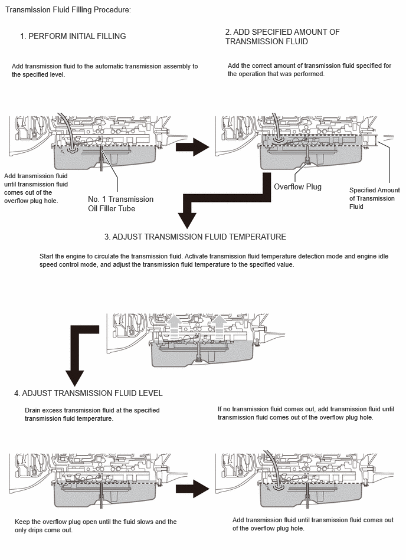
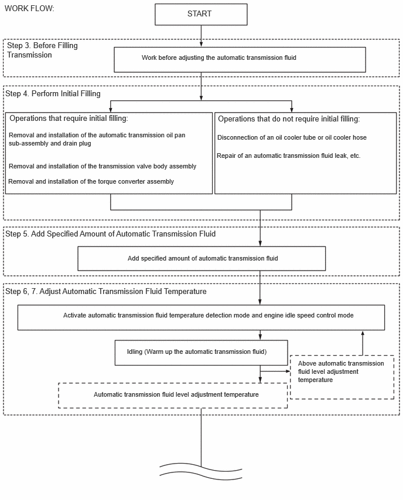
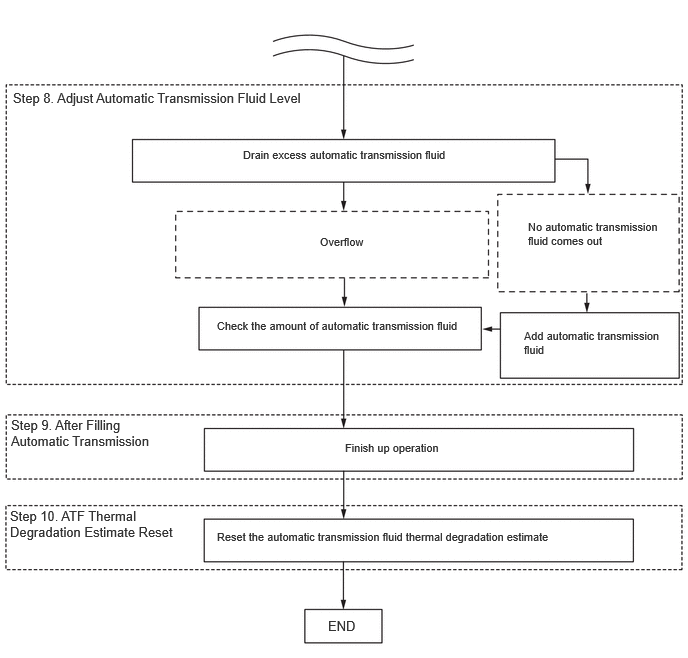

- Disconnection of an oil cooler tube or oil cooler hose
- Repair of an automatic transmission fluid leak, etc.
| Last Modified: 12-09-2025 | 6.11:8.1.0 | Doc ID: RM100000002H30Z |
| Model Year Start: 2024 | Model: Tacoma | Prod Date Range: [12/2023 - ] |
| Title: AL80F (AUTOMATIC TRANSMISSION / TRANSAXLE): AUTOMATIC TRANSMISSION FLUID: ADJUSTMENT; 2024 - 2026 MY Tacoma [12/2023 - ] | ||
ADJUSTMENT
CAUTION / NOTICE / HINT
The necessary procedures (adjustment, initialization or registration) that must be performed after replacing the automatic transmission fluid are shown below.
Necessary Procedures After Parts Removed/Installed/Replaced
|
Replacement Part or Procedure |
Necessary Procedure |
Effect/Inoperative Function when Necessary Procedures are not Performed |
Link |
|---|---|---|---|
|
Automatic transmission fluid HINT:
|
ATF Thermal Degradation Estimate Reset |
The value of the Data List item "ATF Thermal Degradation Estimate" is not estimated correctly. |
|
CAUTION:
-
Be careful not to burn yourself when the automatic transmission fluid temperature is high.

-
To prevent injury due to contact with an operating V-ribbed belt or cooling fan, keep your hands and clothing away from the V-ribbed belt and cooling fans when working in the engine compartment with the engine running or the ignition switch to ON.

-
To prevent burns, do not touch the engine, exhaust pipe or other high temperature components while the engine is hot.

PROCEDURE
PROCEDURE
1. REMOVE NO. 2 ENGINE UNDER COVER ASSEMBLY (w/ Transfer Skid Plate)
Click here
![2024 - 2026 MY Tacoma [12/2023 - ]; AL80F (AUTOMATIC TRANSMISSION / TRANSAXLE): AUTOMATIC TRANSMISSION ASSEMBLY: REMOVAL+](../../../../stylegraphics/info.gif)
2. PRECAUTIONS AND WORK DESCRIPTION
(a) The AL80F automatic transmission assembly does not have an oil filler tube and oil level dipstick. When adding automatic transmission fluid, add automatic transmission fluid through the refill hole on the automatic transmission case sub-assembly. The automatic transmission fluid level can be adjusted by draining excess automatic transmission fluid (allowing excess automatic transmission fluid to overflow) through the overflow plug of the transmission housing.
HINT:
"Overflow" indicates the condition under which automatic transmission fluid comes out of the overflow plug hole.
(b) Before adjusting the automatic transmission fluid level, add the specified amount of automatic transmission fluid when the engine is cold and warm up the engine to circulate the automatic transmission fluid in the automatic transmission assembly. Ensure that the automatic transmission fluid temperature is as specified and the engine is idling.
(c) The AL80F automatic transmission assembly requires Toyota Genuine ATF WS.
Using transmission fluid other than the above type may cause abnormal noise or vibration, or damage the transmission.
(d) Always maintain the vehicle in a level position when adding, checking or adjusting the automatic transmission fluid level.
(e) When performing the procedure, make sure to turn off all electrical loads, such as the air conditioning, headlights and cooling fan.
(f) The fluid temperature in the text indicates the fluid temperature (in Transmission valve body assembly) displayed on the GTS.
(g) The adjustment should be performed according to the procedures and notes.
3. WORK FLOW
(a) The adjustment should be performed according to the procedure referenced in the work flow below.
 4. BEFORE FILLING TRANSMISSION
NOTICE:
If the automatic transmission assembly is hot (automatic transmission fluid temperature is high), wait until the automatic transmission fluid temperature becomes the same as the ambient temperature before starting the following procedure. (Recommended automatic transmission fluid temperature: around 20°C (68°F))
(a) Lift the vehicle.
NOTICE:
The automatic transmission fluid level cannot be measured accurately if the vehicle is not level. Make sure it is held level.
|
(b) Using compressed air, etc., blow dust off the thermostat cap to clean it. |
|
(c) Using a screwdriver, push the shaft of the thermostat.
HINT:
- Pushed Amount: 5.5 to 7.0 mm (0.217 to 0.276 in.)
- Push the shaft until the screwdriver contacts the step inside the cap.
(d) With the shaft of the thermostat pressed, push a pin into a hole on the side of the thermostat's cap. Insert the pin until it passes through the hole on the other side of the thermostat's cap to fix the shaft in place.
NOTICE:
While the pin is inserted, do not increase the automatic transmission fluid temperature to 93 °C (199 °F) or higher.
HINT:
Pin diameter: 1.5 mm (0.0591 in.)
5. PERFORM INITIAL FILLING
NOTICE:
After performing either of the following operations, it is not necessary to perform the fill transmission pan with fluid procedure. Proceed to the "Add Specified Amount of Automatic Transmission Fluid" procedure.
|
Operations that do not require initial filling |
|
|
|
(a) Remove the refill plug and gasket from the automatic transmission assembly. |
|

|
(b) Using a 6 mm hexagon socket wrench, remove the overflow plug and gasket from the automatic transmission assembly. NOTICE:
HINT: Gasket replacement and tightening of the overflow plug are performed after the automatic transmission fluid level is adjusted. |
|

|
(c) Using a 6 mm hexagon socket wrench, check that the No. 1 transmission oil filler tube is tightened to the specified torque. Torque: 1.7 N·m {17 kgf·cm, 15 in·lbf} NOTICE: If the No. 1 transmission oil filler tube is not tightened to the specified torque, the amount of automatic transmission fluid cannot be precisely adjusted. |
|

|
(d) Add automatic transmission fluid to the refill hole until it flows out of the overflow hole. NOTICE:
HINT: When pouring automatic transmission fluid into the refill hole, cover the area surrounding the refill hole with a cloth. If automatic transmission fluid adheres to the automatic transmission oil pan sub-assembly, it may be mistaken for an automatic transmission fluid leak. |
|

|
(e) Wait until the automatic transmission fluid flow slows and only drips come out. |
|

|
(f) Using a 6 mm hexagon socket wrench, temporarily install the overflow plug and gasket to the automatic transmission assembly. HINT: Gasket replacement and tightening of the overflow plug are performed after the automatic transmission fluid level is adjusted. |
|
|
(g) Temporarily install the gasket and refill plug to the automatic transmission assembly. HINT: Gasket replacement and tightening of the refill plug are performed after the automatic transmission fluid level is adjusted. |
|
6. ADD SPECIFIED AMOUNT OF AUTOMATIC TRANSMISSION FLUID
|
(a) Remove the refill plug and gasket from the automatic transmission assembly. |
|
(b) Fill the automatic transmission assembly with the correct amount of automatic transmission fluid as listed in the table below.
Standard Capacity:
|
Performed Repair |
Fill Amount |
|---|---|
|
Removal and installation of the automatic transmission oil pan sub-assembly and drain plug |
6.0 liters (6.3 US qts, 5.3 Imp. qts) |
|
Removal and installation of the transmission valve body assembly |
6.5 liters (6.9 US qts, 5.7 Imp. qts) |
|
Removal and installation of the torque converter assembly |
4.0 liters (4.2 US qts, 3.5 Imp. qts) |
NOTICE:
-
Use Toyota Genuine ATF WS.
Using transmission fluid other than the above type may cause abnormal noise or vibration, or damage the transmission.
- Be sure to add automatic transmission fluid slowly. If automatic transmission fluid is added quickly, the automatic transmission fluid may hit internal parts and bounce back, resulting in automatic transmission fluid coming out of the refill hole.
HINT:
- The amount of automatic transmission fluid to be added differs depending on the performed repair.
-
When pouring automatic transmission fluid into the refill hole, cover the area surrounding the refill hole with a cloth.
If automatic transmission fluid adheres to the automatic transmission oil pan sub-assembly, it may be mistaken for an automatic transmission fluid leak.
- When pouring automatic transmission fluid into the refill hole, it may not be possible to pour the specified amount of automatic transmission fluid because of overflow from the refill hole. In this case, perform the steps below to circulate the automatic transmission fluid through the oil lines in the automatic transmission assembly and the torque converter assembly.
(c) If the specified amount of automatic transmission fluid cannot be added, perform the following:
|
(1) Temporarily install the gasket and refill plug to the automatic transmission assembly. HINT: Gasket replacement and tightening of the refill plug are performed after the automatic transmission fluid level is adjusted. |
|
(2) Lower the vehicle.
(3) Depress and hold the brake pedal.
(4) Start the engine.
NOTICE:
To reduce load, make sure that all electrical systems, such as the air conditioning, electric fan and audio system, are off.
(5) Slowly move the shift lever from P to S, from S to 1st, and then back to P.
HINT:
Keep the shift position in each position for approximately 3 seconds.
(6) Allow the engine to idle for 30 seconds to warm it up.
(7) Turn the ignition switch off.
|
(8) Remove the refill plug and gasket from the automatic transmission assembly. |
|
|
(9) Fill the automatic transmission assembly with the correct amount of automatic transmission fluid as listed in the table above. NOTICE:
HINT: When pouring automatic transmission fluid into the refill hole, cover the area surrounding the refill hole with a cloth. If automatic transmission fluid adheres to the automatic transmission oil pan sub-assembly, it may be mistaken for an automatic transmission fluid leak. |
|
|
(d) Temporarily install the gasket and refill plug to the automatic transmission assembly. HINT: Gasket replacement and tightening of the refill plug are performed after the automatic transmission fluid level is adjusted. |
|
7. ADJUST AUTOMATIC TRANSMISSION FLUID TEMPERATURE (when Using the GTS)
NOTICE:
Use the shift position indicator light in the vehicle combination meter or the GTS to check whether the fluid temperature is appropriate for checking the fluid level. Even when using the GTS, it is necessary to switch to fluid temperature detection mode to activate engine idling speed control.
(a) Activate the TC Terminal.
(b) In order to check the automatic transmission fluid temperature, perform the Active Test "Activate the TC Terminal" with the Data List item "A/T Oil Temperature No. 1" displayed. [#1]
Powertrain > Transmission > Active Test
|
Tester Display |
|---|
|
Activate the TC Terminal |
Powertrain > Transmission > Data List
|
Tester Display |
|---|
|
A/T Oil Temperature No.1 |
(c) Before beginning work, be sure to check that the automatic transmission fluid temperature is below the lower limit of the permissible temperature range for adjusting fluid levels.
The Permissible Temperature Range for Adjusting Automatic Transmission Fluid:
35 to 45 °C (95 to 113 °F)
NOTICE:
If the automatic transmission fluid temperature is higher than permissible temperature range for adjusting fluid levels, suspend work immediately. Lower the temperature to the lower limit of the permissible temperature range or less by moving the vehicle to a cooler location, etc.
(d) Depress and hold the brake pedal.
(e) Start the engine.
NOTICE:
To reduce load, make sure that all electrical systems, such as the air conditioning, electric fan and audio system, are off.
(f) Slowly move the shift lever from P to S, from S to 1st, and then back to P.
HINT:
- Keep the shift position in each position for approximately 3 seconds.
- Slowly move the shift lever to circulate the automatic transmission fluid through each part of the automatic transmission assembly.
|
(g) From the shift position in D, move the shift lever between N and D within 1.5 seconds for 6 seconds or more continuously to switch to fluid temperature detection mode. NOTICE: Do not pause for more than 1.5 seconds. HINT: The fluid temperature detection mode will be activated by moving the shift lever between N and D within 1.5 seconds for 6 seconds or more continuously. |
|
|
(h) Check that the D shift indicator comes on for 2 seconds and then turns off. HINT:
|
|
(i) Return the shift position to P and turn off the Active Test "Activate the TC Terminal" on the GTS. (Disconnect the TC terminal)
NOTICE:
Make sure that the TC terminal is disconnected. If the TC terminal is connected, the automatic transmission fluid level cannot be precisely adjusted due to fluctuations in engine speed.
HINT:
Even after the TC terminal is disconnected, fluid temperature detection mode is active until the ignition switch off.
(j) Warm up the engine with the engine idling until the automatic transmission fluid temperature reaches the appropriate fluid temperature (35 °C (95 °F) or higher and below 45 °C (113 °F)).
D Shift Indicator:
|
Below Automatic Transmission Fluid Level Adjustment Temperature |
Automatic Transmission Fluid Level Adjustment Temperature |
Above Automatic Transmission Fluid Level Adjustment Temperature |
|
35°C or less (95°F or less) |
35 to 45°C (95 to 113°F) |
45°C or more (113°F or more) |
-
If the automatic transmission fluid temperature is within the appropriate fluid temperature range:
Immediately proceed to ADJUST AUTOMATIC TRANSMISSION FLUID LEVEL.
-
If the automatic transmission fluid temperature is 45 °C (113 °F) or higher:
Stop the engine to cool the automatic transmission fluid. Check that the automatic transmission fluid temperature is below 45 °C (113 °F), and then perform the automatic transmission fluid temperature adjusting procedure again.
NOTICE:
Perform the automatic transmission fluid filling procedure at the appropriate fluid temperature (35 °C (95 °F) or higher and below 45 °C (113 °F)).
HINT:
In automatic transmission fluid temperature detection mode, the D shift indicator comes on, turns off or blinks depending on the automatic transmission fluid temperature.
D Shift Indicator:
|
Below Automatic Transmission Fluid Level Adjustment Temperature |
Automatic Transmission Fluid Level Adjustment Temperature |
Above Automatic Transmission Fluid Level Adjustment Temperature |
|
|
Automatic Transmission Fluid Temperature (GTS Display Temperature) |
35°C or less (95°F or less) |
35 to 45°C (95 to 113°F) |
45°C or more (113°F or more) |
|
D Shift Indicator |
OFF |
ON |
Blinks |
8. ADJUST AUTOMATIC TRANSMISSION FLUID TEMPERATURE (when Not Using the GTS)
NOTICE:
- Make sure to switch to fluid temperature detection mode within 60 seconds after starting the engine.
-
At the fluid temperature detection mode, the shift position indicator D illuminates for 5 seconds before it flashes when moving the shift lever to P or N if it is an appropriate temperature or higher.
Shift position indicator D at fluid temperature detection mode
Below Automatic Transmission Fluid Level Adjustment Temperature
Automatic Transmission Fluid Level Adjustment Temperature
Above Automatic Transmission Fluid Level Adjustment Temperature
Automatic Transmission Fluid Temperature
(GTS Display Temperature)
35°C or less
(95°F or less)
35 to 45°C
(95 to 113°F)
45°C or more
(113°F or more)
D Shift Indicator
OFF
ON
Blinks
(a) Turn the ignition switch off. [#2]
(b) Depress and hold the brake pedal.
(c) Start the engine.
NOTICE:
To reduce load, make sure that all electrical systems, such as the air conditioning and audio system are off.
(d) Slowly move the shift lever from P to S, from S to 1st, and then back to P.
HINT:
- Keep the shift position in each position for approximately 3 seconds.
- Slowly move the shift lever to circulate the automatic transmission fluid through each part of the automatic transmission assembly.
|
(e) From the shift position in D, move the shift lever between N and D within 1.5 seconds for 12 seconds or more continuously to switch to fluid temperature detection mode. NOTICE: Do not pause for more than 1.5 seconds. HINT: The fluid temperature detection mode will be activated by moving the shift lever between N and D within 1.5 seconds for 12 seconds or more continuously. |
|
|
(f) Check that the D shift indicator comes on for 2 seconds and then turns off. HINT:
|
|
(g) Return the shift position to P.
NOTICE:
The shift position indicator D illuminates for 5 seconds before it flashes when moving the shift lever to P if it is an appropriate temperature or higher.
(h) Allow the engine to idle until the D shift indicator comes on again.
D Shift Indicator:
|
Below Automatic Transmission Fluid Level Adjustment Temperature |
Automatic Transmission Fluid Level Adjustment Temperature |
Above Automatic Transmission Fluid Level Adjustment Temperature |
|
|
Automatic Transmission Fluid Temperature (GTS Display Temperature) |
35°C or less (95°F or less) |
35 to 45°C (95 to 113°F) |
45°C or more (113°F or more) |
|
D Shift Indicator |
OFF |
ON |
Blinks |
-
If the D shift indicator on the combination meter comes on:
Immediately proceed to ADJUST AUTOMATIC TRANSMISSION FLUID LEVEL.
-
If the D shift indicator on the combination meter blinks:
Stop the engine to cool the automatic transmission fluid. Wait for the D shift indicator to turn off, and then perform the automatic transmission fluid temperature adjusting procedure again.
NOTICE:
Perform the automatic transmission fluid filling procedure when the D shift indicator on the combination meter comes on.
HINT:
In automatic transmission fluid temperature detection mode, the D shift indicator comes on, turns off or blinks depending on the automatic transmission fluid temperature.
9. ADJUST AUTOMATIC TRANSMISSION FLUID LEVEL
CAUTION:
Use caution while the engine is idling and the radiator fans are operating.
(a) Lift the vehicle.
NOTICE:
The automatic transmission fluid level cannot be measured accurately if the vehicle is not level. Make sure it is held level.
|
(b) Using a 6 mm hexagon socket wrench, remove the overflow plug and gasket from the automatic transmission assembly, and check the fluid level when the fluid temperature is appropriate for checking the fluid level. CAUTION: Be careful as the automatic transmission fluid that comes out is hot. |
|
(c) Check that the condition of the automatic transmission fluid coming out of the overflow hole.
NOTICE:
- Check the automatic transmission fluid level with the engine running. Therefore, make sure not to touch the high temperature parts such as the exhaust pipe, etc.
- If only a small amount of automatic transmission fluid (approximately 5.0 cc (0.3 cu.in.)) comes out of the overflow hole, it is possible that only the automatic transmission fluid remaining in the No. 1 transmission oil filler tube has come out. This is not considered to be overflow and the automatic transmission fluid must be refilled.
HINT:
Overflow refers to when automatic transmission fluid is discharged from the No. 1 transmission oil filler tube.
(1) When automatic transmission fluid comes out. (Go to "When automatic transmission fluid comes out")
(2) When automatic transmission fluid does not come out. (Go to "When automatic transmission fluid does not come out")
(d) When automatic transmission fluid comes out:
|
(1) If the amount of automatic transmission fluid that flows out is large, wait until the automatic transmission fluid flow slows and only drops come out. HINT: The automatic transmission fluid flow will not stop completely because the automatic transmission fluid continues to expand as its temperature increases. |
|
(e) When automatic transmission fluid does not come out:
|
(1) If no automatic transmission fluid comes out, remove the refill plug and gasket. Pour automatic transmission fluid into the refill hole until automatic transmission fluid comes out of the overflow hole. NOTICE:
HINT: When pouring automatic transmission fluid into the refill hole, cover the area surrounding the refill hole with a cloth. If automatic transmission fluid adheres to the automatic transmission oil pan sub-assembly, it may be mistaken for an automatic transmission fluid leak. |
|
|
(2) Wait until the automatic transmission fluid flow slows and only drips come out. HINT: The automatic transmission fluid flow will not stop completely because the automatic transmission fluid continues to expand as its temperature increases. |
|
(f) Coat a new gasket with ATF.
(g) Using a 6 mm hexagon socket wrench, install the overflow plug and gasket to the automatic transmission assembly.
Torque:
40 N·m {408 kgf·cm, 30 ft·lbf}
|
(h) Coat a new gasket with ATF. |
|
(i) Install the gasket and refill plug to the automatic transmission assembly.
Torque:
39.2 N·m {400 kgf·cm, 29 ft·lbf}
(j) Lower the vehicle.
10. AFTER FILLING AUTOMATIC TRANSMISSION
(a) Lift the vehicle.
(b) Clean each part and check for automatic transmission fluid leaks.
|
(c) Remove the pin by pushing the shaft with a screwdriver. NOTICE: Make sure the shaft of the thermostat is protruding from the hole on the cap. |
|
(d) Lower the vehicle.
(e) Operation complete.
11. ATF THERMAL DEGRADATION ESTIMATE RESET
NOTICE:
Approximately 50% or more of the ATF has been replaced during a repair of the transmission or a similar operation.
Click here
12. INSTALL NO. 2 ENGINE UNDER COVER ASSEMBLY (w/ Transfer Skid Plate)
Click here
|
|
|